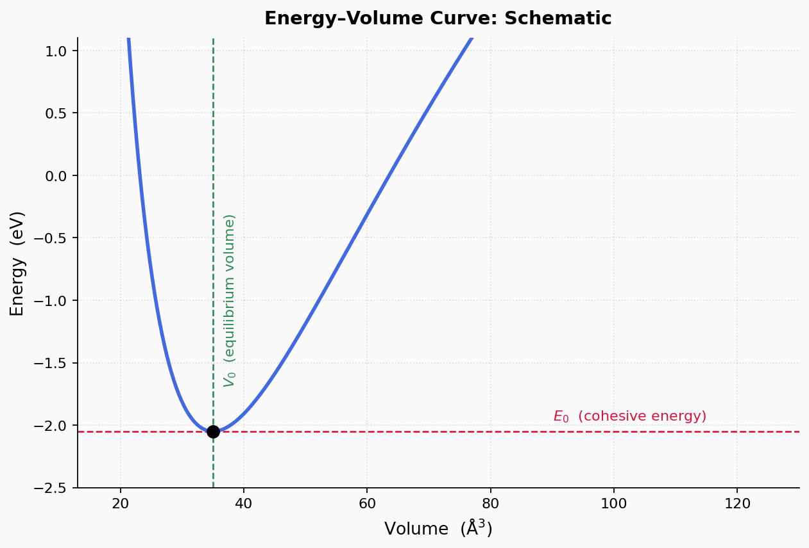

Validation of Interatomic Potentials #
To ensure that the potentials being fit and the properties they predict are accurate and reliable, the values they compute need to be compared against DFT reference, this step is crucial in deciding if the potential captures the underlying physics accurately and whether the potential can be confidently used for the further simulations and analysis. This comparison, i.e., benchmarking is commonly done for a variety of properties, marking the level of accuracy to expect from the potential, in a general sense, and specific to properties of focus.

Energy-Volume curves#
Among the plethora of computations one can perform, and properties to compute for, the simplest benchmarking at this tier is the energy-volume curve. As the name suggests, we obtain the total internal energy of the system as a function of the volume.
This allows us to traverse and obtain a simple section of the potential energy surface, as the change in volume translates to the homogenous separation between two neighbour atoms.

Birch-Murnaghan equation of state#
\begin{equation} E(V) = E_0 + \frac{9V_0 B_0}{16} \left{ \left[\left(\frac{V_0}{V}\right)^{2/3} - 1\right]^3 B_0’ + \left[\left(\frac{V_0}{V}\right)^{2/3} - 1\right]^2 \left[6 - 4\left(\frac{V_0}{V}\right)^{2/3}\right] \right} \end{equation}
Of more importance is that by fitting the energy as a function of the volume, one can obtain the equilibrium energy a.k.a. cohesive energy, equilibrium volume (and lattice parameter) and lastly the bulk modulus of the given crystal, as represented by the potential.
Task
Build a workflow toiterate over different (hydrostatic) strain states and get energy of the system.
To break it down, we need to
- Construct a set of structures that span different volumes
- Construct the initial crystal
- Create an array of strains
- Apply the strains
Hint: Use the - Calculate the energy at each volume
- Loop over each strained structure
- Run a static single-point energy calculation, so that the volume isn't changed
- Collect the resulting energy for each structure
Which node should we use? - Gather the results into a usable format
- Extract the volume from each structure
- Pair each volume with its corresponding energy to form (V, E) data points
- Fit an equation of state (EOS) to the (V, E) data
- Choose an EOS model (e.g., Birch-Murnaghan)
- Fit the model to extract equilibrium volume V₀, cohesive energy E₀, and bulk modulus B₀
- Visualize the results
- Plot the raw (V, E) data points
- Overlay the fitted EOS curve
- Annotate the plot with the extracted quantities
IterateToDataframe node
SinglePointStatic or Relax ?